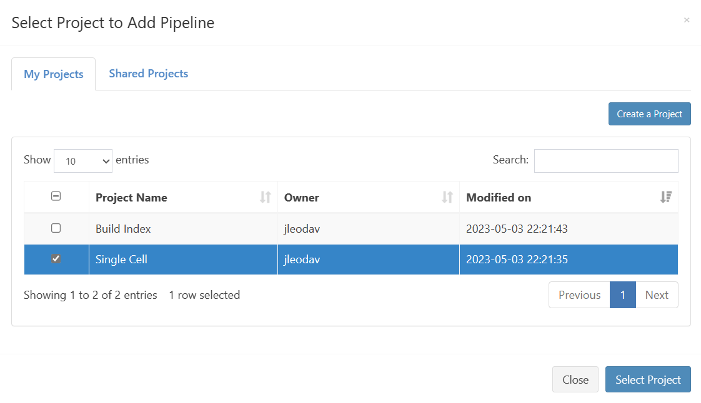
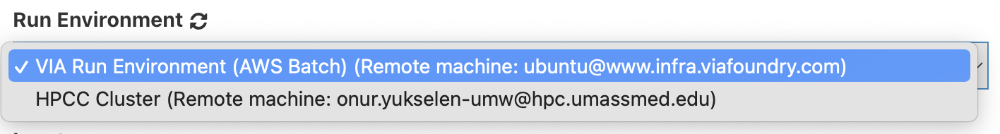
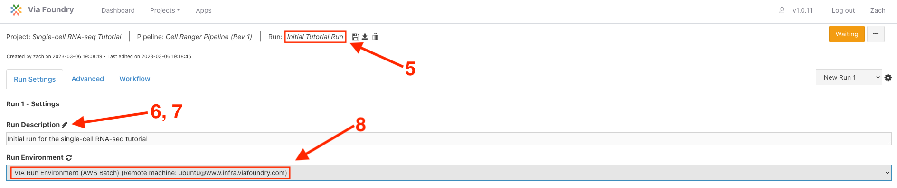

Quick Start Guide
Signing Up
This guide will walk you through how to start using Via Foundry
(formerly DolphinNext) pipelines. First off, you need to navigate to the
Via Foundry web page at https://www.viafoundry.com and click the
Log in button. You will be asked to enter your institute's log-in
information. If you don't have an account, please let us know about it
support@viascientific.com. We will set an account for you.

Run Environments
To access your run environment, simply click on the Profile icon located at the top right corner and navigate to the Run Environment tab. In most cases, we automatically set up the run environment for you. However, if you require additional information on setting up and customizing your profile, please refer to our comprehensive Profile Guide.
Running Pipelines
-
The easiest way to run a pipeline is from the main page, by clicking the
Pipelinesbutton at the top left of the screen. From here, you can investigate publicly available pipelines as shown below and select the pipeline you want to run by clicking on it. -
Once the pipeline is loaded, you will notice a
Runbutton at the right top of the page.
-
Pressing this button opens a new window, where you can create a new project by clicking
Create a Project. After you enter and save the name of the project, it will be added to your project list. Now you can select your project by clicking on it, as shown in the figure below.
-
After clicking
Select Project, you may proceed with entering your desired run name, which will be added to your project's run list. ClickingSave Runwill redirect you to the "Run Page". -
At first, in the header of the run page, you will see an orange "Waiting" button. To start a run, you need to enter/select the following:

A. Run Environment: The environment, discussed in the Profile page, within which you'd like to conduct your run.

B. Work Directory: The work directory refers to the complete path of the directory from which the execution of Nextflow runs will take place. The path may be automatically filled in if a default value is provided in your run environment.
C. Inputs: In this section, you are required to enter various values and files that define the data to be processed and the corresponding processing instructions. For additional information, please check the Adding Files section.

-
Once all requirements are satisfied, the
Waitingbutton will turn into a greenRunbutton as shown below. You can initiate your run by clicking theRunbutton. Please go through the Run Guide for detailed explanation about each module is used.
Adding Files
Remote Files
You can reach your remote files by entering:
- Full path of a directory: e.g.
/share/data/umw_biocore/genome_data/mousetest/mm10/gz - Web link: e.g.
https://web.dolphinnext.com/umw_biocore/dnext_data/tutorial/fastq_data/pair - Amazon (S3) Bucket: e.g.
s3://viafoundry/fastq - Google (GS) Bucket: e.g.
gs://viafoundry/fastq
Geo Files
If you want to download and use NCBI (GEO data) in the pipeline, you can
simply use the GEO Files tab. Here are the few examples for GEO ID:
GSM1331276, GSE55190, SRR10095965

Support
For any questions or help, please reach out to support@viascientific.com with your name and question.